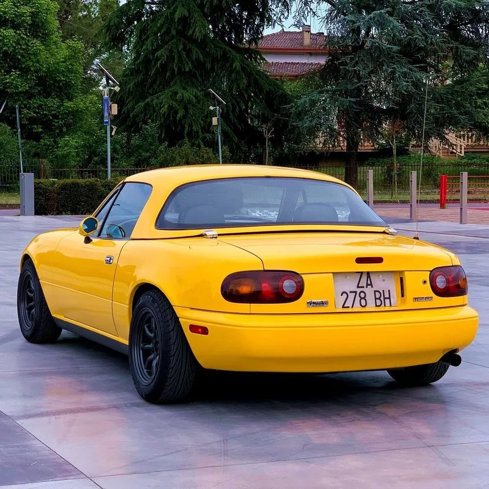
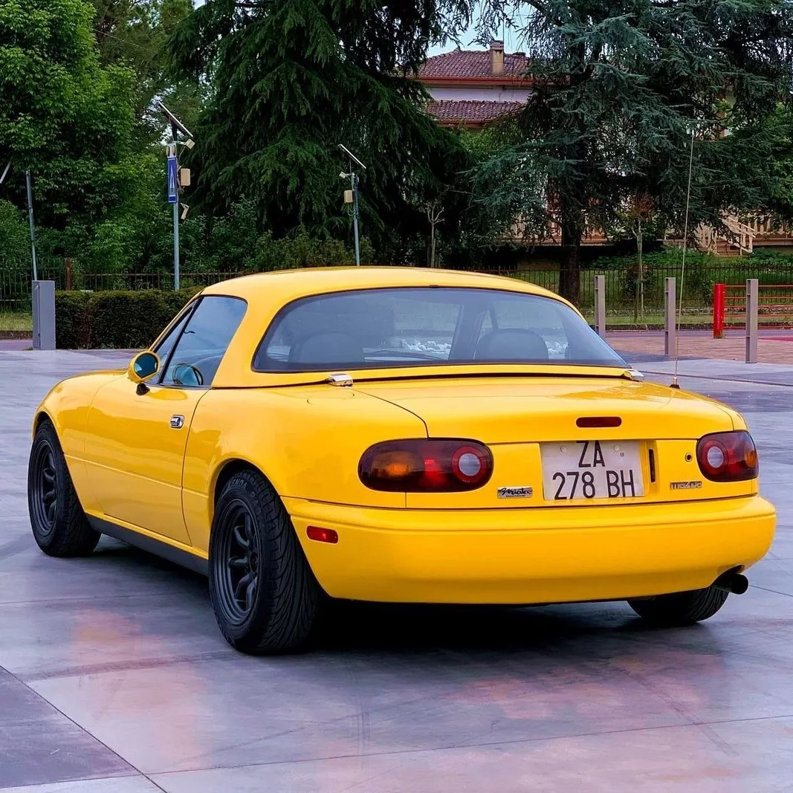

Velocidad máxima: 185km/h
0-100 km/h: 9s
Potencia máxima: 115cv
Longitud: 3975mm
Anchura: 1675mm
Altura: 1224mm
Batalla: 2265mm
Peso: 955kg
La primera generación del MX-5, conocida como NA, salió a la venta en 1989 con motores de 1.6 L que
desarrollaban 115 CV. Estos motores eran delanteros de cuatro cilindros en línea de aspiración natural
que generaban un par máximo de 135Nm desde 5500rpm y su máxima potencia a 6500rpm, transmitida a las ruedas traseras a través de una transmisión
manual de 5 velocidades. Luego en el año 1994 se sacó al mercado una versión más potente de 133 CV y 1,8 L, y
ese mismo año se lanzó un motor 1.6 L de 90 CV.
La denominación MX-5 viene de Mazda eXperimental 5, que se empleó durante su diseño y desarrollo, la cual
se quedó como tal, excepto en Japón que se llamó Eunos y Miata en el mercado estadounidense.
Posee el récord Guiness al descapotable más vendido del mundo, con más de 1.000.000 de unidades vendidas hasta la
actualidad.